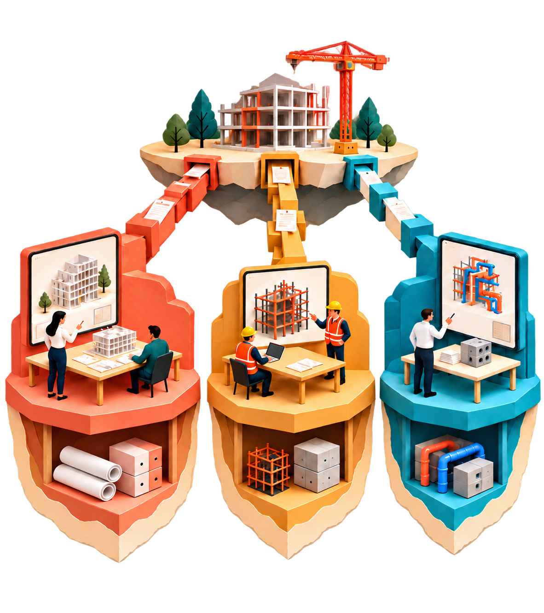

01 — Subsoil · independent AEC tools
Your files.
Each party controls its own data and chooses its apps.
Subsoil explores a shared delivery layer for design and construction apps.
Subsoil explores a common delivery foundation for independent design and construction applications. Each participating organization controls its own data and versions, while teams choose compatible tools for the tasks they need to do.
A registry is a versioned file store that an organization can operate itself or have hosted. OCI supplies the common packaging and transfer interface underneath it. Applications interpret the files they support and publish new versions or results; the store does not perform the model work.
The opening promise is a goal for the ecosystem. Subsoil has a working transfer prototype, while the public workflow across two applications is the proposed next demonstration. Ordinary IFC files are enough to start; further formats can follow when applications need them.
02 — A useful starting point
Why IFClite feels approachable.
The model is close. The workflow is direct. The toolkit is modular.
IFClite · browser workflow MODEL Site Building Storeys Local model.ifc .ifc Drop a file. See the model. Direct file interaction A browser viewer that works locally. Choose the parts you need A modular toolkit for focused apps. Could the wider AEC ecosystem feel this direct?
Open with the appeal of the experience, not an adoption claim. IFClite publicly describes a browser viewer with local drag-and-drop IFC loading, plus packages developers can compose. The browser setup processes the model locally; the project also offers other deployment modes. The illustration is conceptual, not a product screenshot.
Use IFClite as a concrete example of focused, modular software. Ask whether independently built tools could stay focused while sharing a dependable way to deliver model releases.
03 — The connection work
Every new connection takes work.
Apps often need a separate connector for each place a model is stored.
APPS PEOPLE USE PLACES MODELS LIVE Cloud CDE A Cloud CDE B Local server Model viewer Design team Connector 1 Connector 2 Connector 3 Cost tool Cost team Connector 4 Connector 5 Connector 6 Different APIs · access rules · delivery conventions 2 apps × 3 destinations = 6 connectors Add an app or a destination. Repeat the connection work.
Imagine a design team using a model viewer and a cost team using a specialist cost tool. Their models are stored in two cloud CDEs and on a local server. In this example, the viewer needs three delivery connectors. Adding the cost tool brings three more. Each coral box is one connection a tool builder or integration team has to support.
A connector may need to handle a different API, sign-in and permission rules, file packaging and release conventions. Adding another app repeats this work across the destinations it needs; adding another destination creates work for the apps that need it. Existing standards and reusable libraries can help, so the amount of custom work varies.
This is a conceptual example using generic apps and storage services. It does not depict an existing IFClite–AnkerDB integration. The proposal introduced in the following slides is to share the delivery interface and the AEC package agreement, while each organization still controls access and each app supports the model data it understands.
Centralized exchange

Each party keeps its own project data and specialist tools, but exchange is routed through a central project repository. The separate connections represent the work needed to deliver information into that shared place. Centralized describes the exchange arrangement, not ownership of every underlying dataset.
This is a conceptual illustration rather than a depiction of every current CDE. The next slide changes how the parties connect while retaining their own data.
Distributed collaboration
Each party retains its own data and artifacts beneath its workspace and can choose among compatible applications. The connected subsoil represents a distributed delivery foundation between independently controlled stores. The building participates through that same foundation, rather than through a new central channel.
The collections include models, drawings, structured data and other artifacts. The connections do not imply automatic synchronization, live merging or universal application support. Access, agreed profiles and explicit delivery workflows remain necessary. The next slide explains the common agreement that makes compatible connections possible.
06 — The proposal
Integrate once to a common agreement.
Keep each app’s expertise. Share the way model releases are packaged and delivered.
IFClite an independent tool AnkerDB an independent tool Focused app a specialist workflow … AEC PACKAGE / PROFILE What is inside, and how tools interpret it Shared meaning OCI · OPEN CONTAINER INITIATIVE Existing standards to package and distribute files via registries Shared distribution Proposed ecosystem participation · tools support the profiles they understand.
Two layers do different jobs. OCI, the Open Container Initiative, supplies a standard artifact manifest and distribution interface. An AEC package/profile would specify the domain contract: payload types, schema/version, identifiers and the interpretation expected of a consumer.
“Integrate once” means implement that common agreement rather than a new delivery connector for every partner. Tools still need to support the relevant payload/profile. The depicted connections are a proposal; this is not an existing IFClite feature or established AEC-wide standard. No container runtime is required to read a non-executable model artifact.
07 — A shared picture
Each company owns its reservoir.
Different tanks of data. Compatible connections. Control stays with the owner.
COMPANY A Its own data reservoir
IFC
model releases
IDS
requirements
bSDD
dictionary refs
Drawings
releases
Other
future data
Pull IDS OCI-compatible registry · hosted or local · owner-controlled access THE MAPPING Reservoir = registry Tanks = data releases Validation checks IFC against IDS Tools interpret the data. OCI delivers the files. The reservoir/site is the organization’s OCI-compatible registry; a tank is a logical dataset or family of releases. The IFC tank holds model releases. The IDS tank holds Information Delivery Specification requirements. Trace the labeled Pull IDS connection: a validation tool retrieves an agreed IDS release and checks IFC against those requirements. The tool, not OCI, interprets IDS and performs the checks.
The bSDD tank represents references to selected buildingSMART Data Dictionary definitions, or permitted versioned snapshots packaged for a project. It does not imply hosting the entire live external bSDD service. The labels are conceptual package roles; shared profiles and appropriate access must be agreed. An owner can choose a hosted or local registry. Live editing, merging, access configuration and retention need their own workflows.
The Other tank makes the set extensible: additional artifact types and specialist results can be added under agreed profiles. It does not imply every application automatically understands those future payloads.
08 — Freedom to choose tools
Many focused apps. One shared release.
Specialized interfaces to the same agreed model delivery.
Modeling author & issue Estimating quantities & cost 4D planning sequence & time Validation requirements & checks
IFC
release R7
IDS
requirements
bSDD
dictionary refs
Other
future data
ONE OWNER-CONTROLLED REGISTRY Shared model releases Read a supported release. Publish a new one when ready. Apps can stay small and focused · changes become new releases · live editing needs its own workflow
This is the opportunity, not a current integration inventory. A modeling tool, an estimator, a planning tool and a validator can each present the information their users need while referring to the same model release. They can also use versioned IDS requirements and selected bSDD dictionary references or permitted snapshots. The latter represents dictionary context, not a replica of the live bSDD service. IFClite and AnkerDB could participate subject to supporting the agreed profiles.
Shared means access to an identified release with permission. Tools understand only the payloads they support. An AEC profile must define how related model, requirement and dictionary references are associated; OCI does not infer those meanings or perform IDS validation. Editing, coordination and merging remain application workflows, with accepted changes published as new releases.
The Other tank makes the set extensible: additional artifact types and specialist results can be added under agreed profiles. It does not imply every application automatically understands those future payloads.
09 — Across organizations
Compatible connections. Independent owners.
Exchange a chosen release without requiring the same application or hosting provider.
COMPANY A Design organization
IFC
release R7
IDS
bSDD
Other
requirements dictionary refs future data COMPANY B Delivery partner
IFC
release R7
IDS
bSDD
Other
requirements dictionary refs future data Authorized copy Same manifest digest Hosted or local registry Hosted or local registry 01 Push a release 02 Copy with access 03 Pull & verify An explicit delivery operation · each organization manages its own access and retained copy
Walk left to right. A tool publishes an artifact to Company A’s registry. An authorized client, such as ORAS, explicitly copies the chosen IFC release to Company B’s registry. A receiving tool pulls it and verifies the manifest and payload digests. Both sites can also hold IDS requirements and selected bSDD dictionary references or permitted snapshots. Their presence does not imply automatic synchronization or a local copy of the live bSDD service.
Access to source and destination must be configured. The registries are independently operated and can be hosted or local. The destination may use its own repository name or tag while preserving the manifest bytes and digest. Related requirement or dictionary artifacts need explicit agreed references and delivery arrangements; OCI does not interpret their semantics. Retention and any ongoing synchronization are separate workflows.
The Other tank makes the set extensible: additional artifact types and specialist results can be added under agreed profiles. It does not imply every application automatically understands those future payloads.
10 — A low threshold to begin
Start with the IFC file we already have.
The common transport does not require a new model encoding.
START HERE One plain IFC file model.ifc A named profile · schema/version · release identity Packaged as an OCI artifact EXPLORE LATER Richer structured profiles IFC data Geometry Release index JSON · Parquet · GLB · other agreed encodings The distribution interface stays familiar. Agree on the smallest useful package first.
The ecosystem proposal can start with a normal IFC file in an OCI artifact. Agree a small contract for identifying the payload, its schema/profile version and the release. A consumer that understands that profile can use its existing IFC workflow after pulling it. No converter into the local experimental profile is a prerequisite.
Richer profiles might later expose data and geometry separately. The repository explores one such path with JSON, Parquet and GLB. That is an optional experiment, not a settled industry contract. The stable idea is common distribution with explicit payload semantics.
11 — The envelope and the model
A Subsoil release, carried as an OCI artifact. One typed manifest references model data, geometry and supporting documents.
ILLUSTRATIVE OCI MANIFEST · PROPOSED PROFILE { "schemaVersion": 2, "mediaType": "application/vnd.oci.image.manifest.v1+json", "artifactType": "application/vnd.example.subsoil.v1", "config": { "mediaType": "application/vnd.example.subsoil.config.v1+json", "digest": "sha256:000…", "size": 512 }, "layers": [ { "mediaType": "application/vnd.apache.parquet", "digest": "sha256:111…", "size": 8200 }, { "mediaType": "application/ld+json", "digest": "sha256:222…", "size": 1800 }, { "mediaType": "model/gltf-binary", "digest": "sha256:333…", "size": 49000 }, { "mediaType": "application/pdf", "digest": "sha256:444…", "size": 24000 }, { "mediaType": "application/vnd.example.custom", "digest": "sha256:555…", "size": 4096 } ] } Hashes shortened; sizes and example media types are illustrative. Subsoil / AEC profile Defines IDs, roles, encoding + composition. Tools declare which payloads they support. Parquet Model tables · profile-defined encoding JSON-LD Linked semantics · agreed mapping GLB Geometry · declared payload role PDF Supporting document · optional attachment Custom Custom bytes · declared type and capability OCI layers carry bytes. The Subsoil / AEC profile defines their meaning.
Read the illustration as an outer delivery envelope and an inner domain contract. An OCI manifest is a JSON document containing artifactType, a config descriptor and layer descriptors. Each descriptor names the media type, digest and byte size of a referenced blob. The registry can store and copy those bytes without interpreting the model. No container runtime is needed to read this model artifact.
The proposed Subsoil/AEC profile in the config declares shared model/entity identifiers, payload roles, schemas, encoding mappings, units, required capabilities and composition rules. Parquet and JSON-LD are examples of agreed representations, GLB can carry geometry, PDF can be a supporting document, and a custom media type can declare a specialist payload. An arbitrary attachment does not become model data simply by being packaged here. Each encoding requires defined mappings and conformance; this slide does not claim these are standardized IFC encodings.
OCI layers are typed transfer blobs. IFCX semantic layers carry model opinions and composition behavior. There is no required one-to-one mapping between them, and generic OCI blob order does not determine IFCX precedence. If an artifact includes several semantic layers, the AEC profile must explicitly declare how they compose. Independent consumers may fetch the blobs they need when the profile permits, and must report unsupported required content.
The on-slide JSON is illustrative: hashes are shortened, sizes are invented and application/vnd.example.* types describe a proposed contract. The full example files use fictitious complete-length digest values for readability and have no corresponding payload bundle. They are documentation examples, not executable artifacts or conformance fixtures.
Open illustrative OCI manifest JSON · Open illustrative profile-config JSON
12 — Deployment choices
One interface. Many ways to run it.
Run a registry locally, in your cloud, or as part of a vendor service.
Local binary ›_ OCI registry You run it BIM engineer Modeling app USES IFC model RESULT New model release Your cloud OCI registry Your team runs it Quality lead Validation app USES IFC + IDS RESULT Validation report Vendor-operated OCI registry Vendor runs it Planner 4D planning app USES Model + schedule RESULT 4D sequence SAME OCI INTERFACE + AGREED AEC PROFILES Illustrative pairings · tools can use any compatible registry with access and a supported profile.
This makes the infrastructure concrete. A registry implementation can be run as a local executable: for example, zot distributes standalone binaries. An organization can run a registry in its own cloud infrastructure, or use a managed registry service. A software vendor could also operate an OCI-compatible registry for its customers. These are deployment choices, not distinct AEC distribution protocols.
The lower cards show different people operating different software, using different artifact types and producing different results. The examples are proposed AEC workflows, not claims of existing integrations. The tools perform the modeling, validation or planning; the registry stores and distributes their artifacts. Results may be published as new artifacts under an agreed profile. The pairings are illustrative: a compatible tool may use any of the deployments when it has access and supports the package profile. There is no automatic synchronization among the three options.
13 — Versions and change reports
Addressing Changes
Keep each version. Let tools explain what changed.
01 Keep the versions Original files stay available. Each published version has an exact reference. 02 Compare in a tool A comparison app reads the versions and identifies the changes it understands. 03 Publish the result Link a change report to the versions it compared. State its scope and limits. Applications handle model meaning, review and acceptance. Start with whole-file versions; add change reports when needed.
Keep the original files and identify each published version precisely. An OCI manifest digest pins the exact release package; a layer digest identifies the bytes of a particular file. Byte identity establishes what arrived, while an application decides whether two model versions have the same meaning.
A comparison tool reads the relevant versions and explains the changes it can identify. IFC re-exports can alter identifiers and headers, so semantic matching and identity policy belong to the comparison tool. Reports should state their coverage and limits. An ambiguous match or unsupported comparison must not silently become a claim that nothing changed.
Publish a change report with references to the exact input versions. Agree machine-readable fields, types and profile versions when another application needs to consume that report. ifc-git can be one producer through an adapter that preserves its native delta and identity mapping; no single comparison engine or change profile is required to transfer ordinary IFC files.
Applications and project teams handle review, suitability, acceptance and any approval workflow. Those decisions can reference the versions and reports involved. Start with whole-file versions, then add structured changes when they serve a real workflow.
14 — A small proof point
The delivery path has a prototype.
The transfer works. A public workflow across applications is the next goal.
WORKING TRANSFER DEMO LOCAL REGISTRY A Push LOCAL REGISTRY B Copy RECEIVED RELEASE Pull + integrity Exact version retained across both registries Original IFC included by default Supporting files include data tables, geometry and a release index. File integrity and profile validation are separate checks.
Experimental · IFC Lite integration under review · public app workflow proposed
Subsoil’s local two-registry demo publishes a release, copies it to an independently operated registry, and downloads the same manifest and file bytes. Its tests also cover an IFC-only release published by the independent ORAS client with an unfamiliar artifact type.
Conversion includes the original IFC by default. The derived tables and geometry are additional representations, rather than a replacement for the delivered source. Publishing retains the subsoil format and marks eligible source-bearing releases with the provisional IFC release annotations.
Generic pull checks every downloaded layer’s digest and size and integrity-checks the config without imposing an artifact-type or profile allowlist. The verify command explicitly checks the supported subsoil structure; conversion and native publishing also use that validator.
The browser registry source for IFC Lite is under review. The next goal is a public demonstration with a registry owner and another maintained application doing useful work on the same version. Production operation, app interoperability and the shared profile still need to be exercised together; the prototype is experimental and is not a buildingSMART standard.
15 — The proposed public demo
One owner. Two apps. A useful result.
Publish a model, use it in another app, and return a useful result.
APP 1 IFC Lite Edit the model Publish a new version PROJECT OWNER Subsoil registry Files · versions · results Under the owner’s control Hosted or self-hosted APP 2 Another app Do one useful task In-house or independent Publish version Open version Publish the result back A check, a drawing or a quantities report are possible starting tasks. Keep each result linked to the model version it came from.
Choose one small real project, one owner-operated registry and two applications whose maintainers will support the integration. The proposed public demo starts by publishing a model version from IFC Lite. A second application opens that exact version, performs a useful task, and publishes its result back with a reference to the input version.
The second application could be an in-house tool or an independently maintained product. A model check, drawing set or quantities report are examples to discuss with the registry owner and app maintainers. No particular application or output format is required by this proposal.
Begin with a public sample project and invited publishing accounts. The demo should make ownership, version selection and useful results visible to a project team. A broader signup flow can follow if it serves the workflow. The IFC Lite registry integration is under review; this is the next demonstration to build together, not a claim that the full app-to-app workflow is already deployed.
An ordinary source IFC is enough for the first handoff. Structured changes, additional encodings and copying between organizations can extend the workflow later. Each application must understand its chosen files; generic downloading checks byte integrity without requiring a profile validator.
16 — An invitation to collaborate
More apps. More useful project files.
Start with a public demo. Grow through maintained integrations.
01 Prove one useful public workflow 02 Keep ownership with the project 03 Connect more maintained apps Each new app makes existing project files more useful. Each participating registry gives compatible tools another place to work.
The public demo is a starting point for wider participation. First choose a useful project workflow with a registry owner and two application maintainers. Prove the handoff with a small shared example, then use that working demonstration to invite other builders and project teams.
The benefits grow with participation: every compatible application adds something participating organizations can do with the data they control. Every participating registry gives compatible applications another place to work through the same delivery interface. Teams can choose a focused tool for a particular task while keeping their project files and versions together.
Ask which real task would make the first demo useful, who will operate the registry and maintain the app connections, and which other maintained projects people recommend. Recommendations can shape later invitations; no outside participant is committed by this pitch.
IFC is the starting point. Other model and data formats can follow when there is an application and a real workflow for them. Transport compatibility does not make every app understand every file format; the relevant content agreements remain explicit.